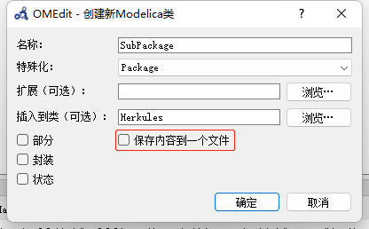

Package 包
以个人经验，任何Modelica 项目最好保存为包的形式，且不应把所有代码保存在同一文件。
文件目录大致如下所示：
Project # 包的根节点目录
│ package.mo # package.mo 内定义Project 包的内容
│ package.order # 子目录排序信息
│
├─Examples # 子包名
│ LoadMatFile.mo
│ package.mo
│ package.order
│
└─Resources
LeakageA.mat # 资源文件
LeakageB.mat
MVerlust.mat
package.mo
package.order
包的代码结构
以Project/Examples/package.mo 为例，其中定义了属于Examples 子包的所有内容代码：
within Project; // 父级包名，最上层的Project 包定义不需要这一行
package Examples // 包名
type Current = Real(unit="A"); // 可以在包内定义一些类型或者其他常量
// 但是不能定义任何变量
end Examples;引用文件
一般情况下，我们可以通过绝对路径找到各种资源文件。但是如果我们希望自己的包是可移植的，那么就需要将资源文件放在包内，如上面的Leakage*.mat 文件，无需额外的声明。在包内的代码中，就可以通过modelica://package/sub_package/.../*.* 来访问资源文件了。例如：
within Project.Examples;
model LoadMatFile
parameter String file = Modelica.Utilities.Files.loadResource("modelica://Project/Resources/LeakageA.mat");
equation
end LoadMatFile;而file 字符串的默认值就是LeakageA.mat 的绝对路径。
查找规则
在Modelica 内使用一个变量或其他符号时，如果没有指定绝对路径，一般会按下面顺序检索：
- 内建类型；
- 从当前（包括其继承的）模块中查找；
- 查找
import导入定义； - 从父包中查找；
- 从更高级的父包中查找，直到：遇到
encapsulate关键字；没有更多父包。
导入包
导入包的语句一般紧跟模型的声明语句：
within ModelicaByExample.PackageExamples;
model NewtonCooling
"Cooling example importing physical types from the Modelica Standard Library"
import Modelica.SIunits.Temperature;
import Modelica.SIunits.Mass;
import Modelica.SIunits.Area;
import ConvectionCoefficient = Modelica.SIunits.CoefficientOfHeatTransfer;
import SpecificHeat = Modelica.SIunits.SpecificHeatCapacity;
// Parameters
parameter Temperature T_inf=300.0 "Ambient temperature";
parameter Temperature T0=280.0 "Initial temperature";
parameter ConvectionCoefficient h=0.7 "Convective cooling coefficient";
parameter Area A=1.0 "Surface area";
parameter Mass m=0.1 "Mass of thermal capacitance";
parameter SpecificHeat c_p=1.2 "Specific heat";
// Variables
Temperature T "Temperature";
initial equation
T = T0 "Specify initial value for T";
equation
m*c_p*der(T) = h*A*(T_inf-T) "Newton's law of cooling";
end NewtonCooling;导入包主要有以下三种方式：
import Modelica.SIunits.Temperature;后可以直接使用Temperatureimport DegK = Modelica.SIunits.Temperature; // Kelvin导入包为新的名称，避免命名冲突import Modelica.SIunits.*;导入所有定义，不推荐！